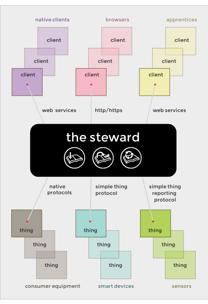

The Thing Architecture
The philosophy behind the architecture describes the way we think about the Internet of Things and home automation systems, and informs our approach to the problem of connecting devices together.
The steward is the center of the system, monitoring and controlling all sorts of things, according to the directives it receives from various clients.
Developers: the links in the remainder of this document will take you to the relevant API information.
Communicating with Things
There are three different protocols that the steward uses to communicate with a thing, the first is actually a grab bag of legacy protocols,
- Most consumer equipment implements some kind of industry-or manufacturer-specific protocol, which the steward terms a native protocol. Examples of these sorts things supported by the steward include the Philips Hue lightbulb, or the Apple TV, and they might talk Zigbee, Z-Wave, INSTEON, DASH7, and so on, many of which are implement as native protocols. If a particular native protocol isn't supported, then a developer must write a device driver for the steward to support it.
In addition the steward also implements two standard protocols which a device can choose to support to be "Thing System native."
If a thing needs to report sensor readings, or an event happening, to the steward it can implement the Thing Sensor Reporting Protocol. The repository contains example code for Arduino and iOS to help developers add the Simple Thing Protocol to their things.
If a thing is capable not just of reporting sensor readings, or events, but also of performing actions then it can implement the Simple Thing Protocol. This protocol is more complex that the reporting protocol but allows the steward to interact with the remote thing. Both to ask for sensor readings, instead of just passively waiting for them to be reported, but also to ask it to perform an action, e.g. turn a light on or off. These smart devices normally have a programmable environment. Examples of this sort of thing include smart phones, tablets, and the things that attach to them, such as Motrr's Galileo, Romotive's Romo, the Swivl, and so on.
Communicating with Clients
There are two different kinds of clients that the steward interacts with:
Simple Clients - These can be platform-specific clients, e.g., Android, iOS or Arduino, or platform neutral and implemented as HTML5 files. The steward implements a comprehensive set of web services to allow a client to monitor and control things, actors, activities, and the steward itself. The repository contains example code for Arduino, iOS and node.js clients.
Apprentices - These differ from the other kinds of clients in that once configured they operate autonomously from the user. Each apprentice implements a particular kind of magic. For example, a "vacation apprentice" might monitor when you turn on (or adjust) the lighting in your home. When you tell the apprentice that you are going on vacation, it then emulates that same behavior.
Typically, an apprentice starts with by asking a couple of questions in order to construct a prefab. A prefab is an internal structure used by the apprentice in order to guide future actions. For example, a "lighting apprentice" might start by asking you to group the lights in your home into natural units (such as "living room", "entry way", and so on).
Communicating with the Cloud
The steward implements the hidden server side of a rendezvous protocol. What that means is that you can have the steward listen for traffic on the Internet while sitting behind your home firewall.
The steward implements a robust security model, so clients are required to use either https or wss (secure web sockets) to connect to the steward, and then authenticate themselves using a time-based OTP system. Future implementations of the steward are planned to support ssh in addition to https and wss.